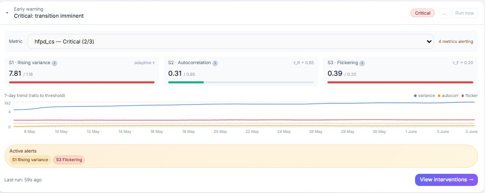

How does it actually work?
Complex systems give warning before they tip.
Long before a team disengages, an attrition wave hits, or a transformation stalls, the underlying signals shift in measurable ways: volatility rises, recovery from ordinary setbacks slows, and indicators begin to flicker between states. These early-warning signatures are well established across fields from ecology to finance.
Lambda Ethics brings that science to organisational health. Short, regular pulse measurements are translated into a single stability index — watched over time, with the dimensions driving it one click away. When the early-warning signals fire, you know to act before the decline reaches your KPIs.
A number a board can read at a glance and a practitioner can interrogate in depth — not another subjective traffic-light.


Early-warning detection
Lambda Ethics tracks organisational conditions over time and flags the statistical signatures of emerging instability — rising variance, slowing recovery, state flickering — so you gain visibility into risk while there is still time to respond.
Scenario simulation
Considering a restructure, a new operating model, or a major change initiative? Model the likely organisational impact before you commit, and see second-order effects and unintended consequences while they are still hypothetical.
Quantitative governance
As organisations rely more heavily on AI-enabled systems, governance can no longer live in policy documents alone. Lambda Ethics produces a measurable, auditable governance profile across fairness, human capability, decision authority, and governance maturity.